Image Viewer
OCR Water Meter
Optical Character Recognition untuk Pembacaan Meteran Air Menggunakan Computer Vision
Project Overview
Implementasi sistem OCR untuk otomatisasi pembacaan digit meteran air menggunakan teknik pengolahan citra digital. Sistem menggunakan YOLOv8 untuk deteksi area meter, multiple segmentation methods, dan machine learning models untuk pengenalan karakter dengan akurasi tinggi.
Pengolahan Citra Digital
Program Pascasarjana
Dewa Ketut Satriawan Suditresanajaya
NIM: 2429101036 | Kelas: E
Problem Statement & Research Objective
Challenges in Manual Meter Reading
- Human Error: Kesalahan pembacaan manual hingga 15-20%
- Labor Intensive: Memerlukan petugas lapangan untuk setiap meter
- Time Consuming: Proses pembacaan memakan waktu lama
- Accessibility Issues: Meter di lokasi sulit dijangkau
- Data Inconsistency: Format pencatatan yang beragam
Research Objectives
- Computer Vision Pipeline: Implementasi sistem deteksi dan segmentasi otomatis
- Multiple Segmentation Methods: Perbandingan fixed_grid, histogram_projection, contour_based
- Feature Engineering: Ekstraksi HOG, LBP, moments untuk classification
- ML Model Comparison: Evaluasi SVM, MLP, CNN, Random Forest
- High Accuracy System: Target akurasi >92% untuk pengenalan digit
Technical Specifications
- Input: Water meter images (various resolutions)
- Processing: 32×32 character normalization
- Features: Multi-dimensional feature vectors
- Output: 6-digit sequence with confidence scores
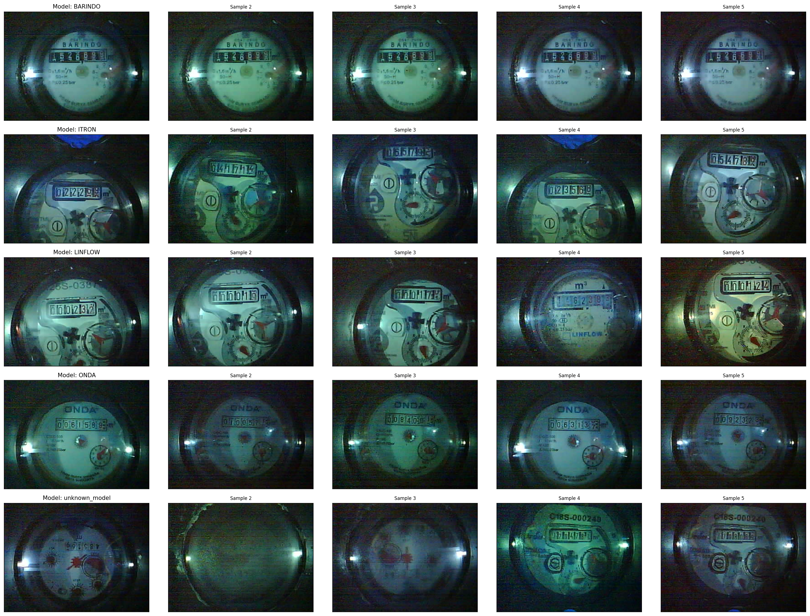
Sample Water Meter Image
Original meter photo with reading challenges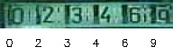
Result
Computer Vision Pipeline & Technical Architecture
Meter Detection
YOLOv8/v11
Confidence: 0.5
Image Size: 320×320
Deskewing
Variance Method
Angle Limit: ±30°
Rotation Matrix
Character Segmentation
Multi-Method
Fixed Grid | Histogram
Output: 32×32 pixels
Feature Extraction
Multi-Features
HOG: 288 dims
LBP: 10 dims
Classification
ML Models
SVM | MLP | CNN
Classes: 0-9
Deskewing Methods Comparison
✓ Best for digit clarity
✓ Robust to noise
○ Good for simple skew
○ Fast processing
○ Line-based detection
○ Works with edges
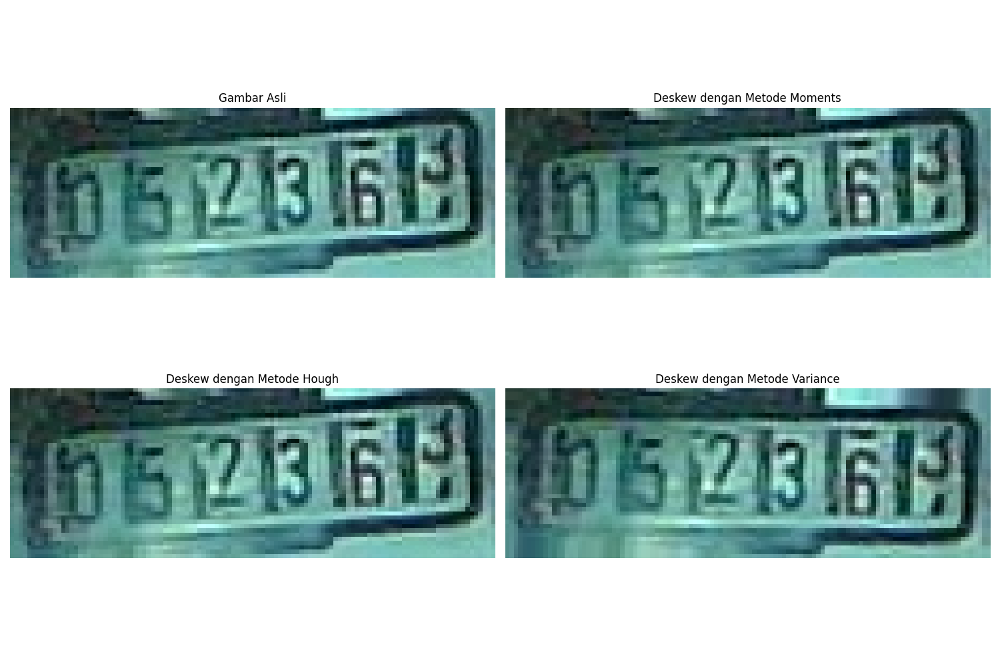
Deskewing Methods Comparison
Variance vs Moments vs Hough resultsSegmentation Methods
6 equal divisions
Border removal: 8px
Valley detection
Threshold: 0.1
Min area: 200px
Aspect ratio: 0.1-1.0
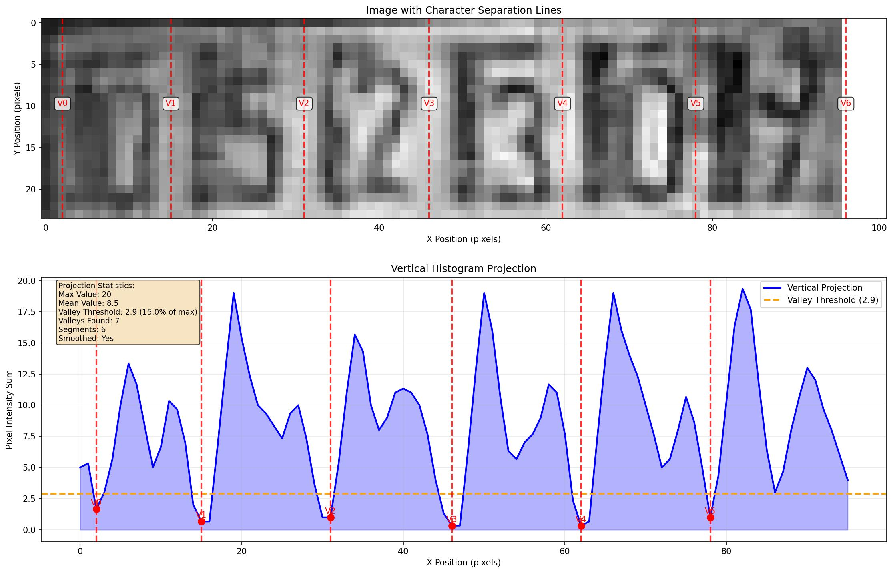
Histogram Projection
Valley detection and boundaries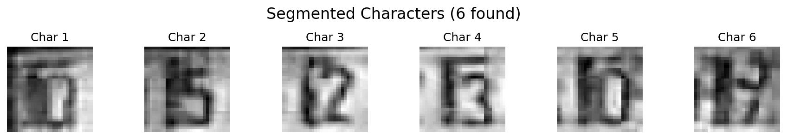
Fixed Grid Segmentation
Equal divisions with bordersImplementation & Key Features
Unified Configuration
Central config.yaml untuk semua proses
- Global settings
- Model configurations
- Pipeline parameters
Advanced Detection
Enhanced detector dengan auto-save
- YOLOv8/v11 support
- Checkpoint system
- Progress tracking
Multi-Segmentation
Multiple character segmentation methods
- Histogram projection
- Fixed grid
- Contour-based
Feature Engineering
Comprehensive feature extraction
- HOG features
- LBP patterns
- Statistical moments
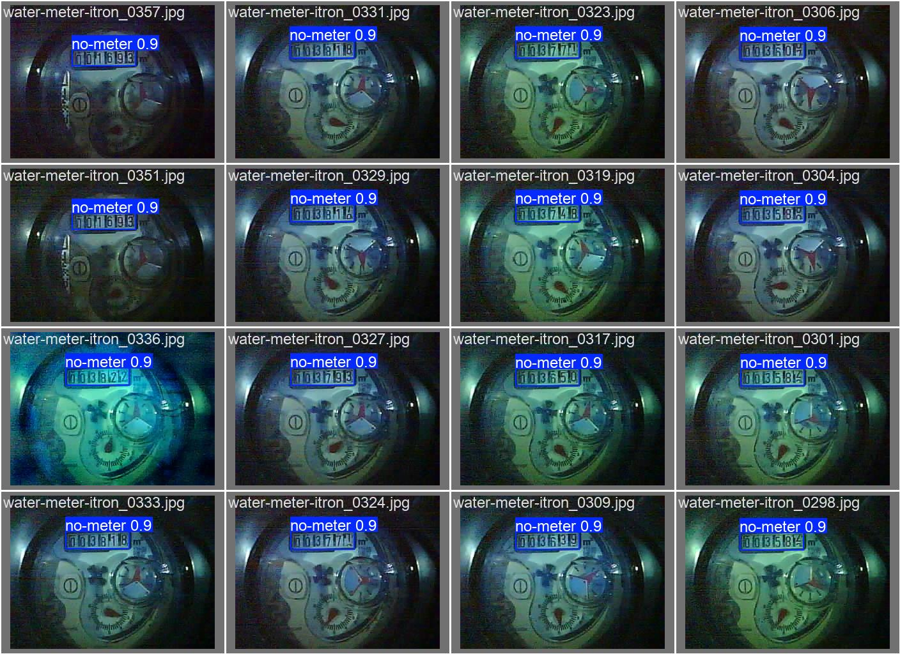
Meter Detection Result
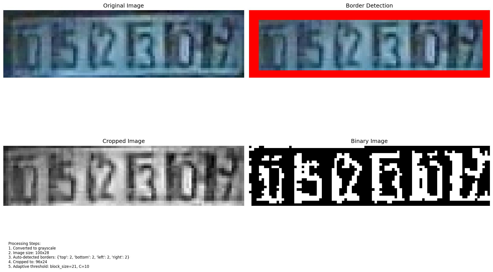
Character Segmentation
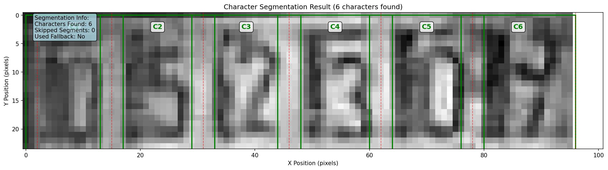
Complete Pipeline Result
SVM Model Results & Analysis
Model Information
Performance Metrics
Confusion Matrix Analysis
Confusion Matrix Heatmap
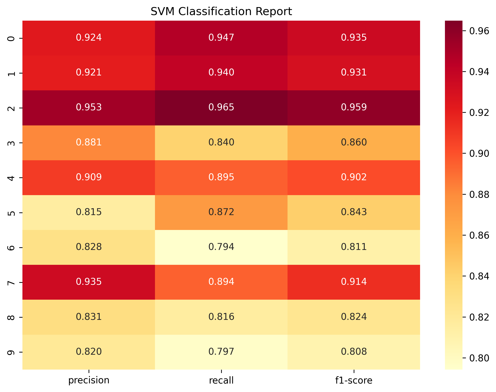
Confusion Matrix Heatmap
Normalized confusion matrix visualizationClassification Report
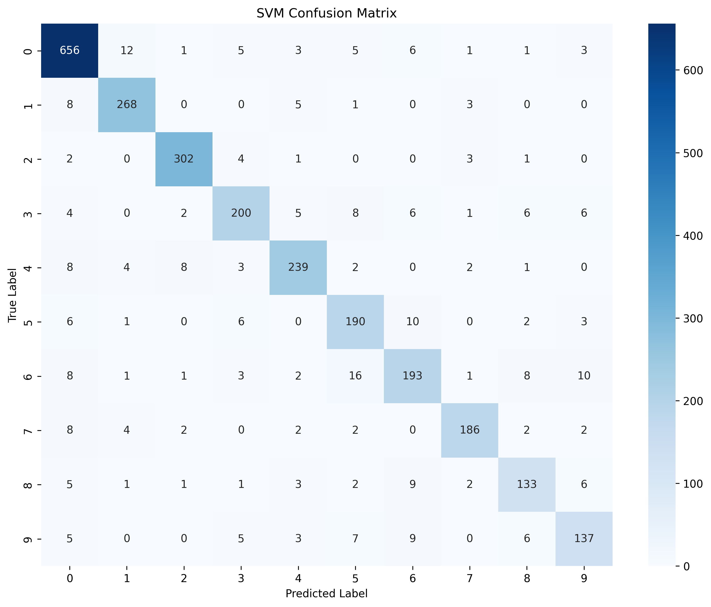
Classification Report
Precision, Recall, F1-Score per classYolo Report
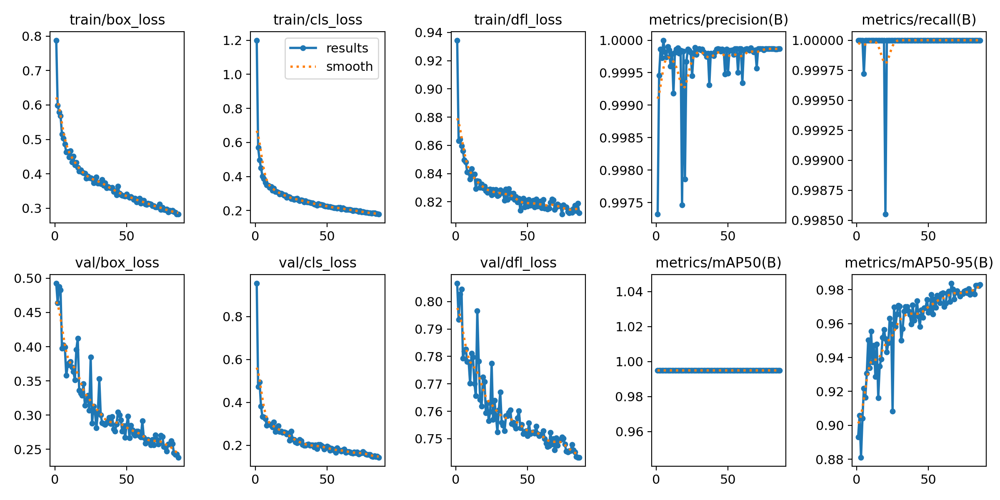
Yolov8n Report
Best Performing Classes
Conclusion & Future Work
Key Achievements
- ✅ SVM model achieved 89.43% test accuracy
- ✅ Robust performance across 10-digit classes
- ✅ Effective feature engineering (334 dimensions)
- ✅ Low training time (3.2 minutes)
Future Improvements
- 🔄 Data augmentation for challenging classes
- 🔄 Ensemble methods for higher accuracy
- 🔄 Real-time optimization
- 🔄 Mobile deployment considerations
Terima Kasih
satriawan.suditresnajaya@student.undiksha.ac.id
S2 Ilmu Komputer - Universitas Pendidikan Ganesha